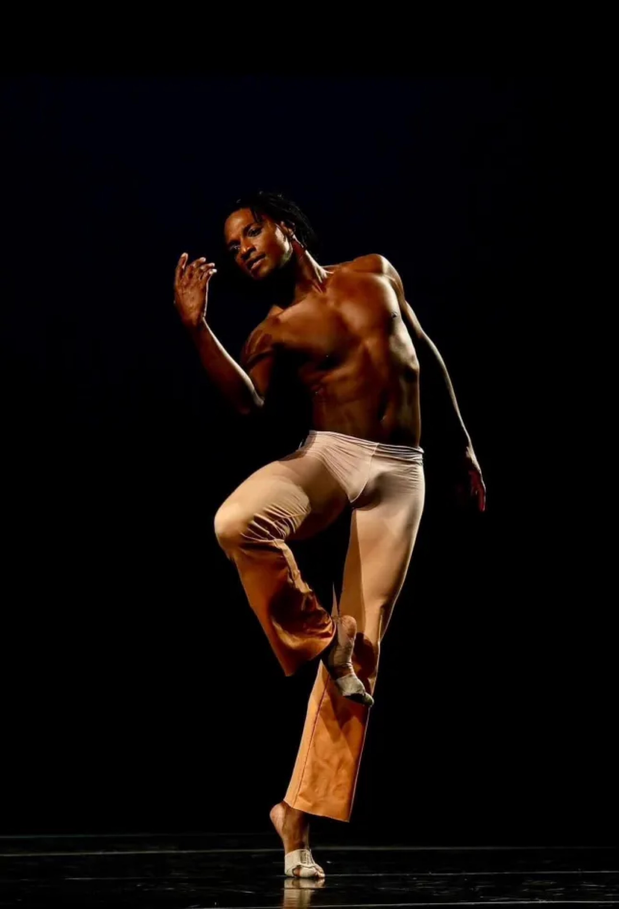
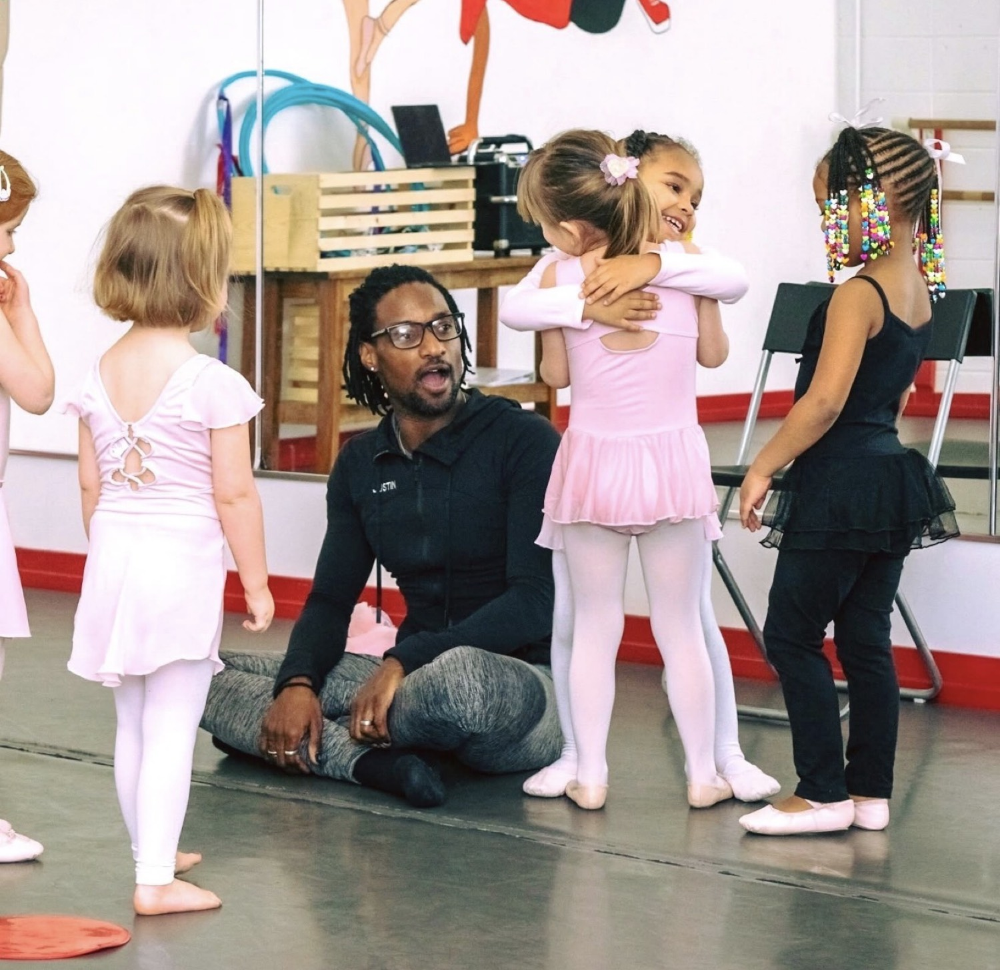
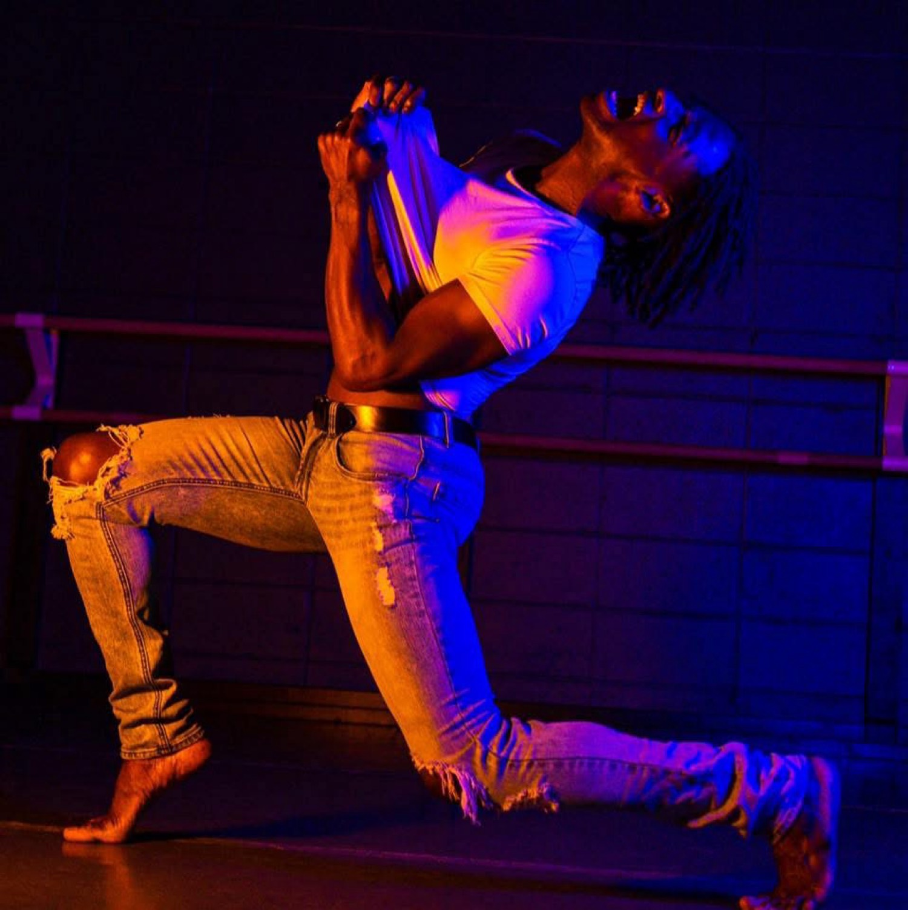
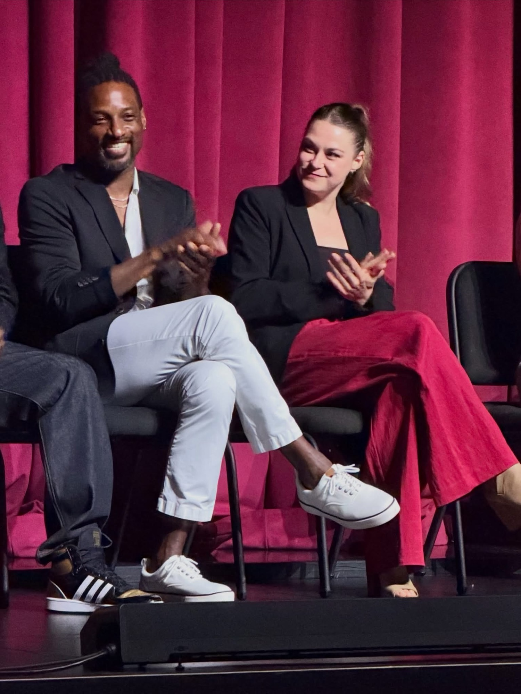
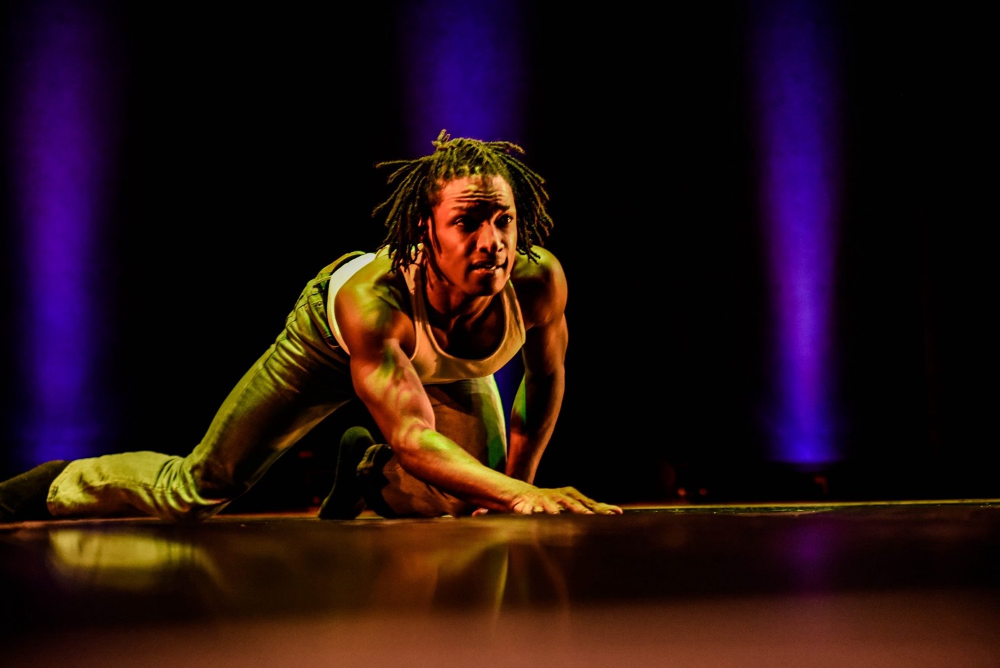
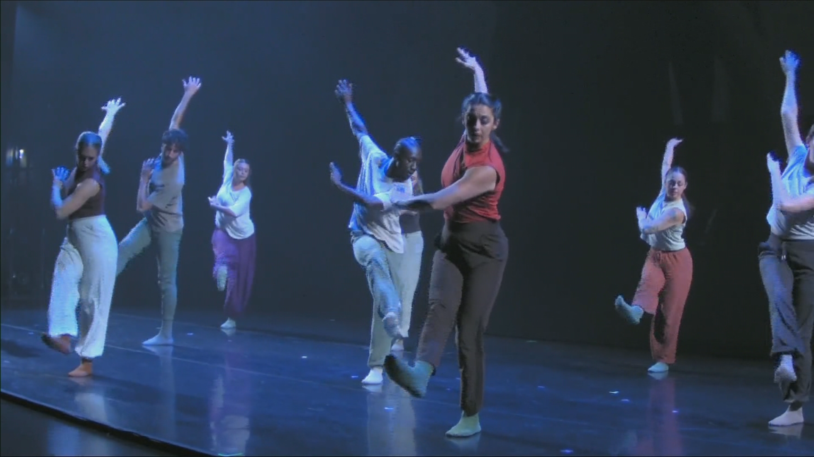
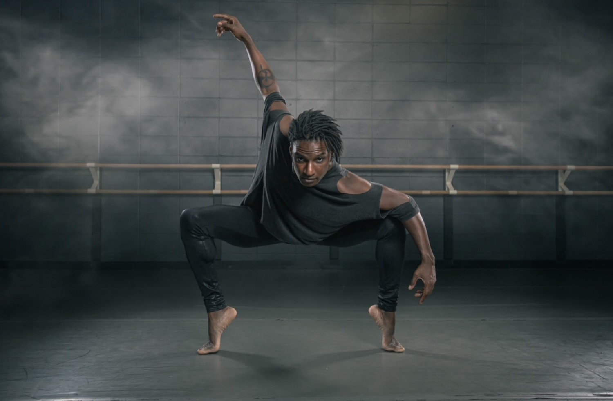
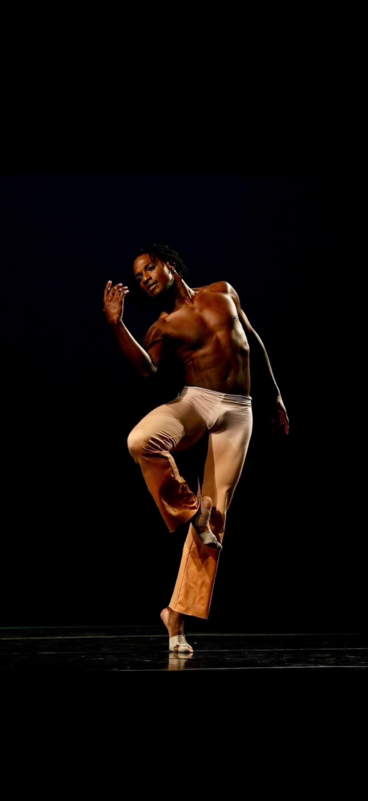

Justin Sears uses dance, film, storytelling, and community conversation to create performances, workshops, and experiences rooted in healing, resilience, and human connection.
Some people encounter this work through a performance.
Some through education. Some through dialogue.
Some through community engagement.
But they're all entering the same conversation.




Justin Sears-Watson is a choreographer, educator, and creative catalyst whose work lives at the intersection of movement, storytelling, recovery, and human connection. Through dance, dialogue, and collaborative art-making, he creates experiences that invite individuals and communities to explore resilience, identity, healing, and transformation.
He is the creator of Edges of Insanity and Recovery in Motion — multidisciplinary projects that use movement and storytelling as powerful tools for healing, self-expression, and connection, especially in recovery and community settings.
His work has been supported by the Herbert Simon Family Foundation, Central Indiana Community Foundation, Allied Solutions New Works Commission, Jacob’s Pillow, and Arts for Learning Indiana. He partners with recovery centers including Avenues Recovery and LaDoga Recovery to bring movement-based programming to those on the path of healing.
A multidisciplinary performance, film, and storytelling project exploring the edges of mental health, recovery, and humanity. Created by Justin David Sears in collaboration with choreographer Margo Korn and filmmaker Amanda Hoover.

Workshops, performances, and conversations for schools, treatment centers, organizations, conferences, and communities.



A national movement rooted in recovery, art, and human connection.
Recovery in Motion is a pioneering project that utilizes movement as a primary tool for healing, self-expression, and connection. We believe that the body holds stories that words cannot express, and that somatic movement can unlock deep pathways to recovery and transformation.
Through community workshops, performance residencies, and public conversations, we empower individuals to reclaim their physical agency, share their lived experiences, and build supportive networks of healing.
Inclusive, multi-generational movement sessions designed for public libraries, schools, and community centers to foster connection and empathy.
Specialized somatic workshops tailored for treatment centers, behavioral health clinics, and recovery organizations to support clinical healing.
Collaborative residencies with arts organizations and universities, culminating in a powerful public performance of "Edges of Insanity."
Keynotes and panel discussions on somatic healing, lived experience, and the intersection of arts and behavioral health.
Trauma-informed curriculum integration and professional development for clinicians, educators, and arts facilitators.